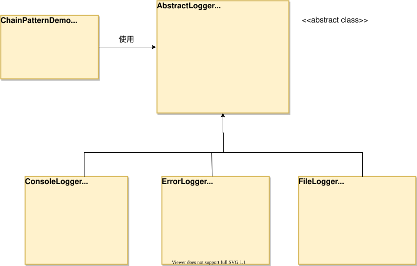

责任链模式
责任链模式（Chain of Responsibility Pattern）为请求创建了一个接收者对象的链。这种模式给予请求的类型，对请求的发送者和接收者进行解耦。这种类型的设计模式属于行为型模式。
责任链模式通过将多个处理器（处理对象）以链式结构连接起来，使得请求沿着这条链传递，直到有一个处理器处理该请求为止。
责任链模式允许多个对象都有机会处理请求，从而避免请求的发送者和接收者之间的耦合关系。将这些对象连成一条链，并沿着这条链传递请求。
介绍
意图
允许将请求沿着处理者链传递，直到请求被处理为止。。
主要解决的问题
- 解耦请求发送者和接收者，使多个对象都有可能接收请求，而发送者不需要知道哪个对象会处理它。
使用场景
- 当有多个对象可以处理请求，且具体由哪个对象处理由运行时决定时。
- 当需要向多个对象中的一个提交请求，而不想明确指定接收者时。
实现方式
- 定义处理者接口：所有处理者必须实现同一个接口。
- 创建具体处理者：实现接口的具体类，包含请求处理逻辑和指向链中下一个处理者的引用。
关键代码
- Handler接口：定义一个方法用于处理请求。
- ConcreteHandler类：实现Handler接口，包含请求处理逻辑和对下一个处理者的引用。
应用实例
- 击鼓传花：游戏中的传递行为，直到音乐停止。
- 事件冒泡：在JavaScript中，事件从最具体的元素开始，逐级向上传播。
- Web服务器：如Apache Tomcat处理字符编码，Struts2的拦截器，以及Servlet的Filter。
优点
- 降低耦合度：发送者和接收者之间解耦。
- 简化对象：对象不需要知道链的结构。
- 灵活性：通过改变链的成员或顺序，动态地新增或删除责任。
- 易于扩展：增加新的请求处理类很方便。
缺点
- 请求未被处理：不能保证请求一定会被链中的某个处理者接收。
- 性能影响：可能影响系统性能，且调试困难，可能导致循环调用。
- 难以观察：运行时特征不明显，可能妨碍除错。
使用建议
- 在处理请求时，如果有多个潜在的处理者，考虑使用责任链模式。
- 确保链中的每个处理者都明确知道如何传递请求到链的下一个环节。
注意事项
- 在Java Web开发中，责任链模式有广泛应用，如过滤器链、拦截器等。
结构
主要涉及到以下几个核心角色：
抽象处理者（Handler）:
- 定义一个处理请求的接口，通常包含一个处理请求的方法（如
handleRequest）和一个指向下一个处理者的引用（后继者）。
- 定义一个处理请求的接口，通常包含一个处理请求的方法（如
具体处理者（ConcreteHandler）:
- 实现了抽象处理者接口，负责处理请求。如果能够处理该请求，则直接处理；否则，将请求传递给下一个处理者。
客户端（Client）:
- 创建处理者对象，并将它们连接成一条责任链。通常，客户端只需要将请求发送给责任链的第一个处理者，无需关心请求的具体处理过程。
实现
我们创建抽象类 AbstractLogger，带有详细的日志记录级别。然后我们创建三种类型的记录器，都扩展了 AbstractLogger。每个记录器消息的级别是否属于自己的级别，如果是则相应地打印出来，否则将不打印并把消息传给下一个记录器。

步骤 1
创建抽象的记录器类。
AbstractLogger.java
public abstract class AbstractLogger {
public static int INFO = 1;
public static int DEBUG = 2;
public static int ERROR = 3;
protected int level;
//责任链中的下一个元素
protected AbstractLogger nextLogger;
public void setNextLogger(AbstractLogger nextLogger){
this.nextLogger = nextLogger;
}
public void logMessage(int level, String message){
if(this.level <= level){
write(message);
}
if(nextLogger !=null){
nextLogger.logMessage(level, message);
}
}
abstract protected void write(String message);
}
步骤 2
创建扩展了该记录器类的实体类。
ConsoleLogger.java
public class ConsoleLogger extends AbstractLogger {
public ConsoleLogger(int level){
this.level = level;
}
@Override
protected void write(String message) {
System.out.println("Standard Console::Logger: " + message);
}
}
ErrorLogger.java
public class ErrorLogger extends AbstractLogger {
public ErrorLogger(int level){
this.level = level;
}
@Override
protected void write(String message) {
System.out.println("Error Console::Logger: " + message);
}
}
FileLogger.java
public class FileLogger extends AbstractLogger {
public FileLogger(int level){
this.level = level;
}
@Override
protected void write(String message) {
System.out.println("File::Logger: " + message);
}
}
步骤 3
创建不同类型的记录器。赋予它们不同的错误级别，并在每个记录器中设置下一个记录器。每个记录器中的下一个记录器代表的是链的一部分。
ChainPatternDemo.java
public class ChainPatternDemo {
private static AbstractLogger getChainOfLoggers(){
AbstractLogger errorLogger = new ErrorLogger(AbstractLogger.ERROR);
AbstractLogger fileLogger = new FileLogger(AbstractLogger.DEBUG);
AbstractLogger consoleLogger = new ConsoleLogger(AbstractLogger.INFO);
errorLogger.setNextLogger(fileLogger);
fileLogger.setNextLogger(consoleLogger);
return errorLogger;
}
public static void main(String[] args) {
AbstractLogger loggerChain = getChainOfLoggers();
loggerChain.logMessage(AbstractLogger.INFO, "This is an information.");
loggerChain.logMessage(AbstractLogger.DEBUG,
"This is a debug level information.");
loggerChain.logMessage(AbstractLogger.ERROR,
"This is an error information.");
}
}
步骤 4
执行程序，输出结果：
Standard Console::Logger: This is an information. File::Logger: This is a debug level information. Standard Console::Logger: This is a debug level information. Error Console::Logger: This is an error information. File::Logger: This is an error information. Standard Console::Logger: This is an error information.

昔日沧桑
126***2117@qq.com
在上述基础上进行优化。
设置 nextLogger 时，在初始化时就指定。
步骤一同上。
步骤二：
public class ConsoleLogger extends AbstractLogger{ public ConsoleLogger() { this.level = Level.INFO; //指定nextLogger为FileLogger setNextLogger(new FileLogger()); } @Override public void log(String message) { System.out.println("Console logger: " + message); } }步骤三类似。
步骤四：
public class ErrorLogger extends AbstractLogger { public ErrorLogger() { this.level = Level.ERROR; //nextLogger设置为null //扩展时将此更改为新的Logger setNextLogger(null); } @Override public void log(String message) { System.out.println("Error logger: " + message); } }步骤五：
public class ChainPatternDemo { public static void main(String[] args) { /** * 暴露最低等级既可 */ AbstractLogger consoleLogger = new ConsoleLogger(); consoleLogger.logMegger(3, "错误信息"); System.out.println(); consoleLogger.logMegger(2, "测试信息"); System.out.println(); consoleLogger.logMegger(1, "控制台信息"); } }输出信息:
昔日沧桑
126***2117@qq.com
宇文天启
ubu***oxmail.com
三国杀锦囊求无懈应该就是责任链模式了吧，哈哈
任意角色的锦囊结算时，按顺序依次询问看有没有人使用无懈可击，如果有，锦囊效果被抵消，询问中止。但因为无懈可击本身也是锦囊，所以生效后还会再次触发一遍求无懈的过程。
宇文天启
ubu***oxmail.com
Siskin.xu
sis***@sohu.com
Python 方式：
# Chain of Responsibility Pattern with Python Code from abc import abstractmethod,ABCMeta # 创建抽象的记录器类 class AbstractLogger(metaclass=ABCMeta): INFO = 1 DEBUG = 2 ERROR = 3 _level = 0 #责任链中的下一个元素 _nextLogger = None def setNextLogger(self,inNextLogger): self._nextLogger = inNextLogger def logMessage(self,inLevel,inMessage): if self._level <= inLevel : self.write(inMessage) if self._nextLogger is not None : self._nextLogger.logMessage(inLevel,inMessage) @abstractmethod def write(self,inMessage): pass # 创建扩展了该记录器类的实体类 class ConsoleLogger(AbstractLogger): def __init__(self,inLevel): self._level = inLevel def write(self,inMessage): print("Standard Console::Logger: "+inMessage) class ErrorLogger(AbstractLogger): def __init__(self,inLevel): self._level = inLevel def write(self,inMessage): print("Error Console::Logger: "+inMessage) class FileLogger(AbstractLogger): def __init__(self,inLevel): self._level = inLevel def write(self,inMessage): print("File::Logger: "+inMessage) # 创建不同类型的记录器，赋予它们不同的错误级别，并在每个记录器中设置下一个记录器。每个记录器中的下一个记录器代表的是链的一部分 if __name__ == '__main__': errorLogger = ErrorLogger(AbstractLogger.ERROR) fileLogger = FileLogger(AbstractLogger.DEBUG) consoleLogger = ConsoleLogger(AbstractLogger.INFO) errorLogger.setNextLogger(fileLogger) fileLogger.setNextLogger(consoleLogger) loggerChain = errorLogger loggerChain.logMessage(AbstractLogger.INFO,"This is an information.") loggerChain.logMessage(AbstractLogger.DEBUG,"This is a debug level information") loggerChain.logMessage(AbstractLogger.ERROR,"This is an error information.")Siskin.xu
sis***@sohu.com
Bulecin
129***8047@qq.com
C++ 方式：
#include <iostream> #include <string> using namespace std; enum { INVALID = 0, INFO, DEBUG, ERROR }; class AbstractLogger { public: AbstractLogger() : nextLogger(nullptr),level(INVALID) {} void setNextLogger(AbstractLogger* logger) { nextLogger = logger; } void logMessage(int cur_level, string cur_message) { if (cur_level >= level) { write(cur_message); cout << endl; } if (nextLogger != nullptr) { nextLogger->logMessage(cur_level, cur_message); } } protected: virtual void write(string message) = 0; protected: AbstractLogger* nextLogger; int level; }; class InfoLogger : public AbstractLogger { public: InfoLogger(int cur_level) { level = cur_level; } void write(string message) override { cout << "Info::Logger : " << message; } }; class FileLogger : public AbstractLogger { public: FileLogger(int cur_level) { level = cur_level; } void write(string message) override { cout << "File::Logger : " << message; } }; class ErrorLogger : public AbstractLogger { public: ErrorLogger(int cur_level) { level = cur_level; } void write(string message) override { cout << "Error::Logger : " << message; } }; class LoggerChain { public: AbstractLogger* getChainOfLoggers() { AbstractLogger* infoLogger = new InfoLogger(INFO); AbstractLogger* fileLogger = new FileLogger(DEBUG); AbstractLogger* errorLogger = new ErrorLogger(ERROR); errorLogger->setNextLogger(fileLogger); fileLogger->setNextLogger(infoLogger); return errorLogger; } }; int main(){ LoggerChain* loggerChain = new LoggerChain(); AbstractLogger* logger = loggerChain -> getChainOfLoggers(); logger->logMessage(INFO, "this is info!"); cout << endl; logger->logMessage(DEBUG, "this is debug!!"); cout << endl; logger->logMessage(ERROR, "this is error!!!"); cout << endl; return 0; }Bulecin
129***8047@qq.com